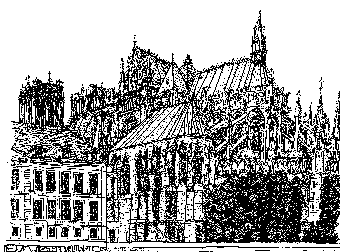
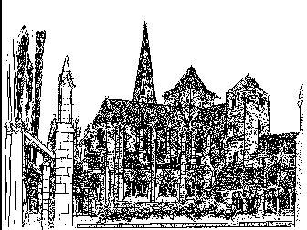
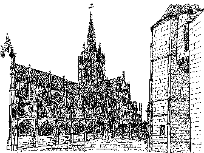

Seiten: Links und Tips für Burgenfreunde/Castles and Forts 1 2 3 4 5 6 7 8 9 Gast im Schloß: 10 Mittelalter und andere historische Epochen: 11 Schlösser zu verkaufen/Castles for Sale: 12 Kunsthandel/Antiquitäten/Antics/Antiques/Fine Art: 13
LARP - Die Zeitreise in die Vergangenheit: Mystische Rollenspiele in
historischem Outfit auf Burgen und anderen geheimnisvollen Plätzen (von
Jens Tiefenstädter)
Abenteuer Mittelalter. Willkommen auf der Welfenburg.
Umfangreiche Mediaevistik-Linksammlung
Mittelhochdeutsche Grammatik auf der Mediaevistik Homepage
Essen University
ORB Bibliographies: Castles
Das Mittelalter - Topadresse für Mittelalterfreunde
DIE LEGENDE E.V. Kaiserslautern INTRO - Gemeinnütziger Verein für mittelalterliche Kultur
und Fantasy-Rollenspiel
Links rund ums Mittelalter von Glanländer
TEMPUS-VIVIT.NET - Die Adresse für Mittelalter und Mittelalterszene in Deutschland
Klöster in Bayern
Catedrales - eine spanische Linksammlung zu Kathedralen
im Web - Spitze!



Haus der Bayerischen Geschichte
Museologie Online am Historischen Centrum des Stadtmnuseums Hagen
The International Council of Museums (ICOM)
Uni Erlangen, FB Geschichte: Info zu Forschungen
Künsberg / Künßberg - Zur Geschichte einer Adelsfamilie
Internet-Adressen für HistorikerInnen
The Catholic Encyclopedia
Concilium medii aevi - Mediävistische Zeitschrift
Mittelalter-Suchmaschine, -Server und -Veranstaltungen
Military Miniatures Magazin - Zeitschrift für Sammler von Figuren und Fahrzeugen
im Maßstab 1:72 - mit vielen historisch interessanten Informationen, auch zu Burgen und Schlössern, zu
Schlachten und Kampagnen, zu Wehrtechnik und Ausrüstung.
Ritterreisen - Historisch interessante Reiseziele weltweit
Old Louisville Guide - Eine victorianische Perle der USA. Toll
aufgemacht und vorbildlich für Altstadtaufritte im WEB
Anregungen, Ergänzungsvorschläge? -